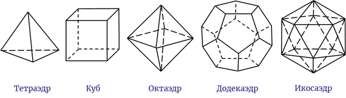

Created: 2024-09-17 Tue 16:59
Многогранники
Двугранные углы. Понятие о многогранном угле.
Аныктама
Многогранник — это тело, ограниченное конечным числом плоскостей. Эти плоскости, пересекаясь, образуют грани многогранника — многоугольники. Стороны этих многоугольников называются рёбрами многогранника, а концы рёбер — его вершинами.

Аныктама
Двугранным углом называется фигура, образованная прямой и двумя полуплоскостями с общей границей , не принадлежащими одной плоскости.
—